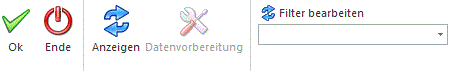

Wenn die Option
Ø Anonymisierung
ausgewählt ist, können Personendaten mittels Vorlagen anonymisiert werden. Es werden rechts im Fenster Auswahlboxen für die Auswahl der Vorlagen für Personenkonten, Kontakte und Belege angezeigt, die für die Selektion der personenbezogenen Felder verwendet werden sollen.
Selektion
In diesem Bereich kann entschieden werden, ob ein bestimmtes Konto oder eine Merkliste mit Konten bearbeitet werden soll.
Ø Kontonummer
Wenn dieser Radiobutton selektiert ist, kann ein bestimmtes Konto für die Anonymisierung bearbeitet werden. Das Konto kann im darunterliegenden Feld "Konto" eingetragen bzw. aus dem Konten-Matchcode selektiert werden. Wenn kein Konto hinterlegt wird, werden alle Debitor- bzw. Kreditorenkonten (Hauptkonten) mit dem Button "Anzeige" in die Bildschirmtabelle geladen.
Ø Merkliste
Wenn dieser Radiobutton selektiert ist, können die Konten in einer schon bestehenden Konten-Merkliste für die Anonymisierung bearbeitet werden. Die Merkliste kann im darunterliegenden Feld "Konten aus Merkliste" eingetragen bzw. aus dem Merklisten-Matchcode selektiert werden.
Vorbelegung
Ø Sammelkonto
Dieses Feld ist bei Option "Anonymisierung" inaktiv.
Bildschirmtabelle "Kontenauswahl"
Ø Auswahl
Wenn diese Checkbox für eine Tabellenzeile aktiviert ist, wird das Konto bei der Anonymisierung berücksichtigt.
Ø Kontonummer/-bezeichnung
Die Kontonummer bzw. -bezeichnung des Personenkontos werden in diesen Spalten angezeigt.
Ø Kontentyp
Anzeige des Kontentyps (Debitor/Kreditor).
Ø Subkonten vorhanden
bei der Anonymisierung wird hier angezeigt, ob es zu einem Konto Subkonten gibt (ist kein solches Konto in der Selektion vorhanden, wird die Spalte nicht
angezeigt).
Ø Im aktuellen Wirtschaftsjahr vorhanden
Trifft dies für alle selektierten Konten zu, wird die Spalte nicht angezeigt.
Ø Anzahl Buchungen
Die Anzahl von Buchungen in vorhandenen Buchungsstapeln für das Konto ist in dieser Spalte angezeigt.
Ø Anzahl Offene Posten
Die Anzahl von vorhandenen offenen Posten für das Konto ist in dieser Spalte angezeigt.
Ø Anzahl Belege
Die Anzahl von bestehenden Belegen für das Konto ist in dieser Spalte angezeigt.
Ø Anzahl CRM-Beiträge
Die Anzahl von vorhandenen CRM-Beiträgen für das Konto ist in dieser Spalte angezeigt.
Tabellenbuttons

Ø Alle
Durch Anwahl des Buttons werden alle Zeilen in der Bildschirmtabelle selektiert.
Ø Auswahl umkehren
Durch Anwahl des Buttons wird die Auswahl in der Bildschirmtabelle umgedreht.
Ø Kontenauskunft anzeigen
Durch Anwahl des Buttons wird die Kontenauskunft in WinLine Info für das markierte Konto in der Bildschirmtabelle geöffnet.
Ø Ausgabe Excel
Durch Anwahl des Buttons "Ausgabe Excel" wird der Inhalt der Tabelle nach Microsoft Excel übergeben.
Ø Tabelleneinstellungen speichern
Die Spalten einer Tabelle können grundsätzlich an beliebige Positionen verschoben, bzw. in der Breite entsprechend angepasst werden. Durch Anwahl des Buttons "Tabelleneinstellungen speichern" werden die Einstellungen benutzerspezifisch gespeichert und bei dem nächsten Aufruf des Programmpunktes wieder vorgeschlagen.
Ø Gesamteinstellungen speichern
Im Gegensatz zu "Tabelleneinstellungen speichern" können mit "Gesamteinstellungen speichern" mehrere Tabellenaufbauten gespeichert und nach Wunsch geladen werden. Zusätzlich werden Sonderfunktionen der Tabelle (z.B. "Spalte gruppieren") ebenfalls bei der Speicherung bedacht.
Vorlagen für die Selektion der Felder
In diesen drei Auswahlboxen (Personenkonten, Kontakte, Belege) stehen alle individuellen Formulare zur Auswahl, bei denen im Fenster "Vorlagen Anlage" die Option "Anonymisierungsvorlage" aktiviert wurde. Darunter werden in einer Bildschirmtabelle alle in den ausgewählten Vorlagen enthaltenen Felder angezeigt, die für die Anonymisierung verwendet werden können (d.h. Datenstands-Felder, Eigenschaften, Erweiterungsfelder und Beschreibungsfelder). In der Bildschirmtabelle wird jeweils nur die Bezeichnung des Feldes angezeigt. Jene Vorlagenfelder, die bei der Anonymisierung nicht berücksichtigt werden können, werden in Rot angezeigt. Eigenschaften, eigene Tabellenerweiterungen, Erweiterungs- und Beschreibungsfelder können immer berücksichtigt werden. Für Belege stehen nur die Felder aus dem Belegkopf zur Verfügung. Bei Auswahl einer Vorlage wird die Bildschirmtabelle jeweils neu gefüllt.
Buttons

Ø Ok
Mit einem Klick auf diesen Button wird der Anonymisierungslauf gestartet. Die Felder in den gewählten Vorlagen werden für jedes Konto initialisiert bzw. überschrieben. In den Kontonamen, den Nachnamen des Ansprechpartners und den Nachnamen bei natürlichen Personen wird immer der Text "Anonymisiert am xx.xx.xx" eingetragen, für den Kontakt wird auch der Anzeigename neu zusammengesetzt. Für geänderte Konten und Ansprechpartner werden das EXIM-Kennzeichen, sowie Datum und Benutzer der letzten Änderung aktualisiert. Wenn aufgrund der Vorlage Bankverbindungs-Werte im Kontenstamm initialisiert werden, werden auch die entsprechenden Werte in der Bankverbindungen-Tabelle (für alle vorhandenen Bankverbindungen des Kontos) initialisiert. Die Einstellung "Adresse des Kontos übernehmen" in den Kontakten wird nicht berücksichtigt, d.h. wenn die Adressfelder initialisiert werden sollen, müssen diese auch in der ausgewählten Kontakte-Vorlage enthalten sein. Auch die Anrede-Felder und der Firmenname werden nur initialisiert, wenn sie in der Vorlage enthalten sind.
In der Vorlage enthaltene Eigenschaften werden gelöscht, Erweiterungs- und Beschreibungsfelder werden aus der XML-Erweiterung entfernt, Zusatzfelder initialisiert (sowohl für das Konto, als auch für die Ansprechpartner des Kontos abhängig von der jeweils gewählten Vorlage).
Ø Ende
Mit einem Klick auf diesen Button wird das Fenster ohne weitere Aktionen geschlossen.
Ø Anzeigen
Mit einem Klick auf diesen Button (im Fenster-Ribbon bzw. im Fenster) wird die Bildschirmtabelle mit den selektierten Konten befüllt.
Ø Datenvorbereitung
Dieser Button ist deaktiviert mit Option "Anonymisierung".
Ø Filter bearbeiten
Über diesen Button kann ein bestehender Filter bearbeitet oder ein neuer Filter angelegt werden. Neben dem Button stehen in einer Auswahlbox alle definierten Filter zur Auswahl. Es stehen die Tabellen des Kontenstammes zur Verfügung.